简介
Maven项目对象模型(POM、Project Object Model)，主要服务于基于Java平台的项目构建，依赖管理和项目信息管理。Maven的核心功能便是合理叙述项目间的依赖关系。
项目构建
理想的项目构建是高度自动化，跨平台，可重用的组件，标准化的，使用maven就可以帮我们完成上述所说的项目构建过程。
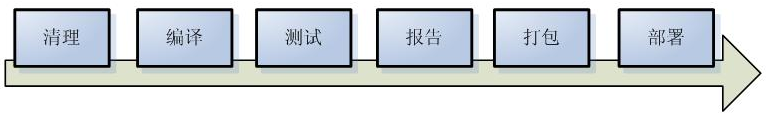
依赖管理
假如正在开发项目A和B，A依赖于B中的某些类，那么如何维系这种依赖关系呢？未使用Maven前，一般将B打包为jar，并在A的Library下导入B的jar文件。手动控制项目依赖的缺点：如果修复了B中的bug，要么选择将B打包导入A中，要么将B发布出去并告知开发者使用方法。这样效率低下且存在人为失误。
依赖管理指使用Maven来管理项目中使用到的jar包，Maven管理的方式就是：自动下载项目所需要的jar包，统一管理jar包之间的依赖关系。
Maven安装
安装Maven需安装好jdk 1.6+版本，并配置好JAVA环境变量
Maven下载链接，安装完目录结果如下
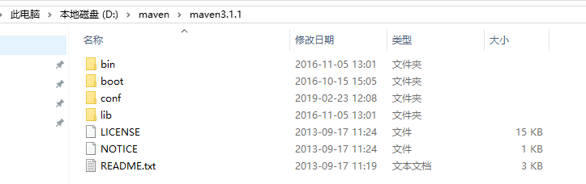
目录分析
bin：含有mvn运行的脚本
boot：含有plexus-classworlds类加载器框架
conf：含有settings.xml配置文件
lib：含有Maven运行时所需要的java类库
LICENSE.txt, NOTICE.txt, README.txt针对Maven版本，第三方软件等简要介绍
配置环境变量
MAVEN_HOME
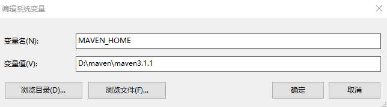
Path
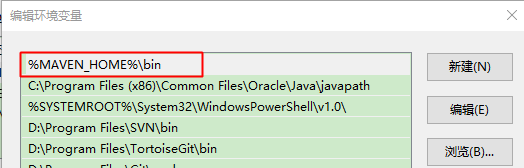
打开cmd窗口，输入mvn –v命令，能查看到Maven的相关信息，说明已经安装成功
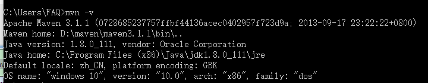IDEA创建Maven项目
Tips：IDEA内置了maven
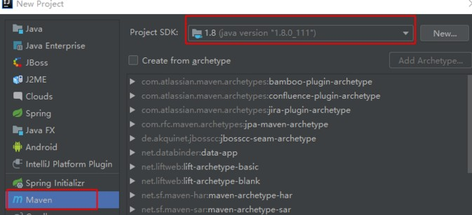GroupID：是项目组织唯一的标识符，是main目录里java的目录结构。按照约定规范举例：com即为项目域名后缀，假设公司为co，项目为webapp，groupId就为：com.co.webapp
ArtifactID：是项目的唯一的标识符，实际对应项目的名称，也就是项目根目录的名称。
Version：指定了项目的当前版本，SNAPSHOT意为快照，说明该项目还处于开发中，是不稳定的版本。
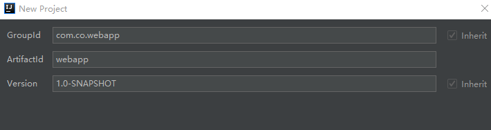
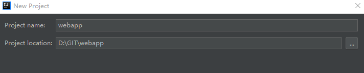
创建完项目，我们一般会手动在java包下根据GroupID建立对应路径
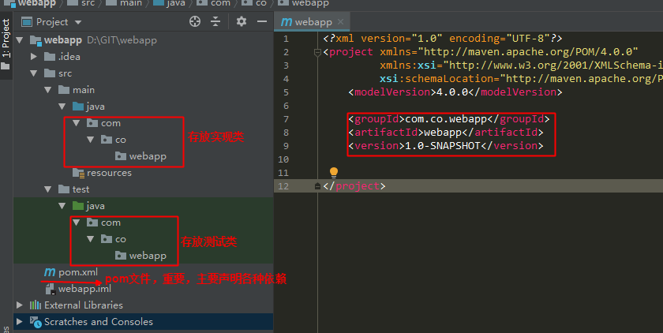POM文件
所有的Maven项目包含着一个名为pom.xml的文件，文件中记录着自身的
等字段，这些字段在创建Maven项目时填写，Maven会依据它们来确定着项目唯一版本，另一个关键标签是 ，该标签下可以包含若干个 标签，用来声明依赖关系。
如：我们要添加JUNIT的jar包，可以到Maven远程中心仓库搜索JUNIT
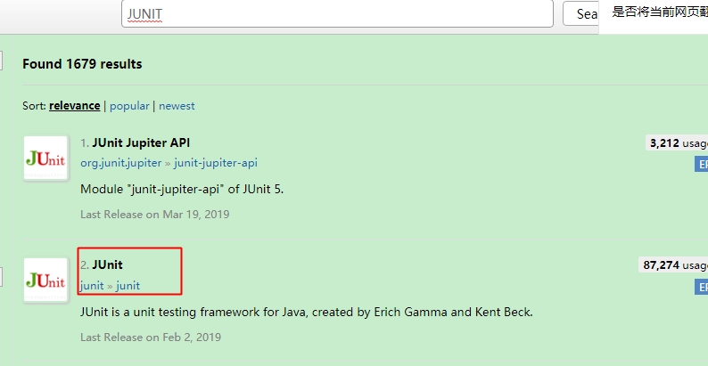
点击选择其中一个版本
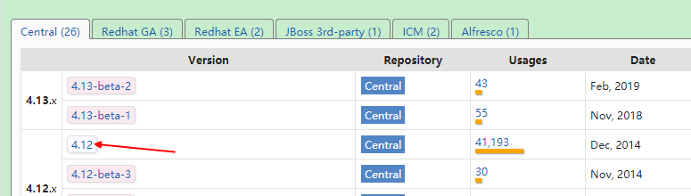
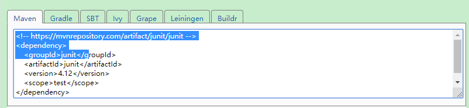
复制Maven框中的内容，把它们复制到pom的下： 1
2
3
4
5
6
7
8
9
10
11
12
13
14
15
16
17
18
19
20
<project xmlns="http://maven.apache.org/POM/4.0.0"
xmlns:xsi="http://www.w3.org/2001/XMLSchema-instance"
xsi:schemaLocation="http://maven.apache.org/POM/4.0.0 http://maven.apache.org/xsd/maven-4.0.0.xsd">
<modelVersion>4.0.0</modelVersion>
<groupId>com.co.webapp</groupId>
<artifactId>webapp</artifactId>
<version>1.0-SNAPSHOT</version>
<dependencies>
<!-- https://mvnrepository.com/artifact/junit/junit -->
<dependency>
<groupId>junit</groupId>
<artifactId>junit</artifactId>
<version>4.12</version>
<scope>test</scope>
</dependency>
</dependencies>
</project>
点击同步后，就可以在Dependencies下看到下载到本地仓库的插件
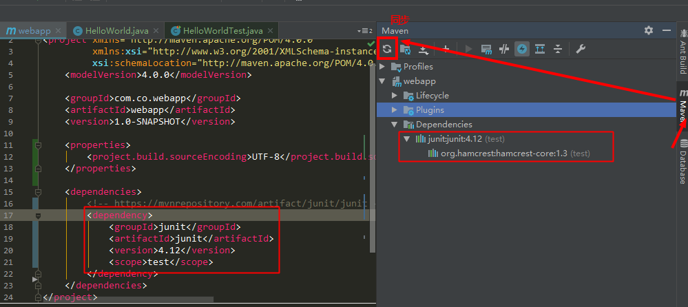
POM常用标签
maven下载依赖时，依次读取三个配置文件，分别是项目下的pom.xml 文件 、用户目录下的.m2/settings.xml 与 maven 全局配置settings.xml
三者的级先是 pom.xml > /home_dir/.m2/settings.xml > /maven_dir/conf/settings.xml 。pom仅作用于本项目，用户setting作用于调用了此文件的项目，全局setting作用于所有项目
1 |
|
仓库概念
仓库分为：本地仓库、第三方仓库(私服)、中央仓库
- 本地仓库：Maven会将工程中依赖的构件(Jar包)从远程下载到本机一个目录下，默认的仓库是在：$user.home/.m2/repository，如：C:\Users\ZTS.m2\repository
- 第三方仓库：又称为内部中心仓库，也称为私服，一般是由公司自己设立的，只为本公司内部共享使用。它既可以作为公司内部构件协作和存档，也可作为公用类库镜像缓存，减少在外部访问和下载的频率。私服可以使用的是局域网，所以一般公司都会创建这种第三方仓库，保证项目开发时，项目所需用的jar都从该仓库中拿，每个人的版本就都一样。
- 远程中心仓库：Maven内置了远程公用仓库：http://repo1.maven.org/maven2，这个公共仓库是由Maven自己维护，里面有大量的常用类库，并包含了世界上大部分流行的开源项目构件。工程依赖的jar包如果本地仓库没有，默认从中央仓库下载
命令
假设已经用IDEA创建了MAVEN项目，我们同时写了两个类用于测试，打开CMD命令行，进入项目根目录就可以执行Maven命令了
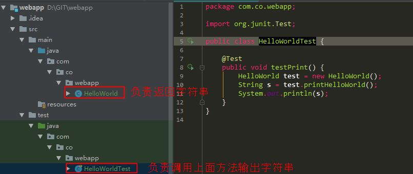
编译
编译时会跟据POM文件声明的依赖，自动下载各种依赖的jar包，编译成功后根目录多了一个target文件夹，目录下多了.class文件
1 | mvn compile |
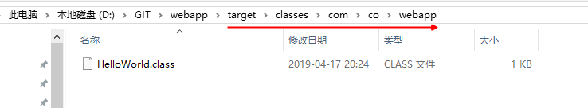
清理
删除编译项目时生成的target文件夹
1 | mvn clean |
测试
Maven先帮我们编译项目，然后再执行测试代码，生成了的target文件夹里面有classes和test-classes
1 | mvn test |
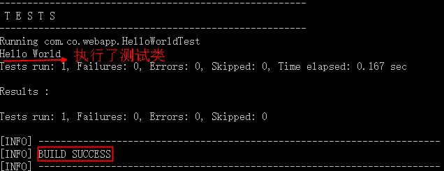
打包
打包成功之后，可以看到项目根目录下的target文件夹下生成了一个webapp-1.0-SNAPSHOT.jar 的jar包
1 | mvn package |
安装
安装实际对项目做了清理、编译、测试、打包，再把打包好的jar和相关的依赖声明放到本地仓库中
1 | mvn install |
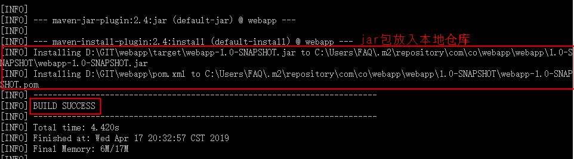
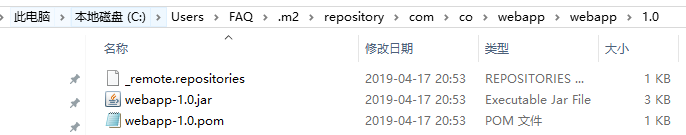
Tips：Maven3不提供oracle JDBC driver，如果需要用到ojdbc，则需要自己下载jar。CMD命令行切换jar包所在目录，执行下面命令将jar安装到仓库
1 | mvn install:install-file -DgroupId=com.oracle -DartifactId=ojdbc6 -Dversion=11.2.0 -Dpackaging=jar -Dfile=ojdbc6-11.2.0.jar |
部署&调用
详见008-Nexus